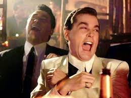
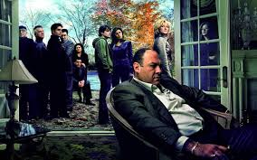

Curiosidades
-
Ray Liotta
El reconocido actor Ray Liotta era la principal opción de David Chase para el papel de Tony Soprano. Antes de esto, Liotta se había destacado por varios roles de mafiosos o similares, notablemente por ejemplo en Goodfellas (Martin Scorsese, 1990), por lo que era una opción bastante lógica.
Sin embargo, el actor se negó porque no quería comprometerse con una serie, con la que debía mantenerse en el mismo rol por años. Posteriormente, también se le ofreció el papel de Ralph Cifaretto, que tampoco aceptó y quedó en manos de Joe Pantoliano.
-
Las Torres Gemelas
En la recordada presentación de Los Soprano, mientras Tony va conduciendo e ingresando a Nueva Jersey, se podían apreciar las Torres Gemelas durante las primeras tres temporadas de la serie. Luego de los acontecimientos de 9/11, estas fueron removidas de la presentación.
-
La Canción
Hoy en día, pocas cosas resultan tan icónicas e inmediatamente relacionadas con la serie como la canción titulada “Woke Up This Morning”, a cargo de la banda inglesa Alabama 3, con la que abría cada episodio de Los Soprano. Pero esto podría haber sido diferente si no fuera porque, por una vez, una decisión de la cadena fue más acertada que la del creador.
David Chase originalmente quería utilizar una canción diferente al comienzo de cada episodio, pero desde HBO lo convencieron de que la serie necesitaba tener una canción con la que los televidentes pudieran identificarla. Chase, de todas maneras, se dio el gusto de poner una canción distinta al final de cada episodio.
-
La moda mafiosa
Luego de que se emitió el piloto, un verdadero mafioso de Nueva Jersey le dijo a James Gandolfini que nunca volviera a ponerse shorts, ya que aparentemente es una prenda que no va bien un hombre del crimen organizado. Esta anécdota parece haber sido incorporada a la serie, ya que en un episodio de la temporada 4 de Los Soprano, el jefe mafioso Carmine le dice a Tony que ha oído acerca de la fiesta que mantuvo en el patio de su casa y que “un jefe mafioso nunca debe usar short”.
 -
La película
Originalmente, David Chase tenía la idea de un jefe mafioso que va a terapia para resolver los asuntos con su madre, y la había pensado como una película. Luego de discutir el proyecto con su representante, terminó optando por desarrollar la idea y convertirla en una serie de televisión.
Aún así, luego de rodar el piloto de la serie, en 1997, HBO dejó el proyecto un poco de lado por algún tiempo, por lo que su creador revivió la idea de la película, propuso a la cadena filmar 45 minutos más y lanzarla como un largometraje.
Finalmente, HBO ordenó 12 episodios más para completar la primera temporada de Los Soprano y dar inicio así a un fenómeno histórico e imperdible de la televisión.